共同筆記

-
本單元簡介共同筆記的使用流程，一般使用者可編輯已存在之共同筆記，欲新增共同筆記的使用者需為該專案的參與人。
-
操作流程步驟如下圖所示：
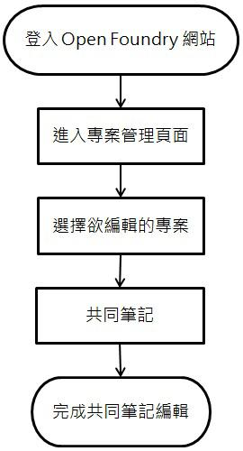
操作步驟
-
進入 OpenFoundry 首頁，接著在首頁的右上方點選【登入】連結進入登入頁面，輸入帳號與密碼後再點選【登入】按鈕。
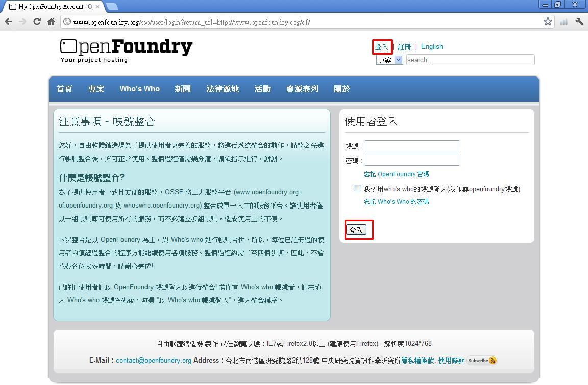
-
登入後會列出使用者目前參與的所有專案，在此以 testproject01 為說明範例，點選下方的【Wiki】按鈕進入共同筆記功能頁面。
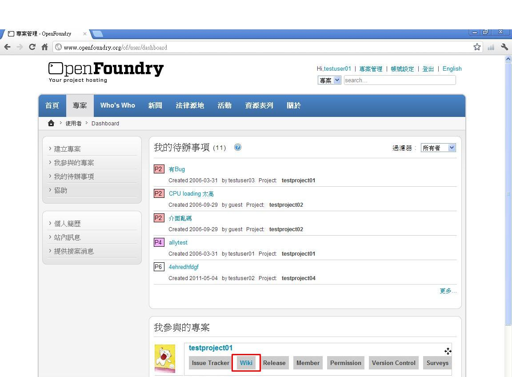
-
接著將進入 testproject01 共同筆記的首頁，點選【新增】便能開始撰寫新的頁面。
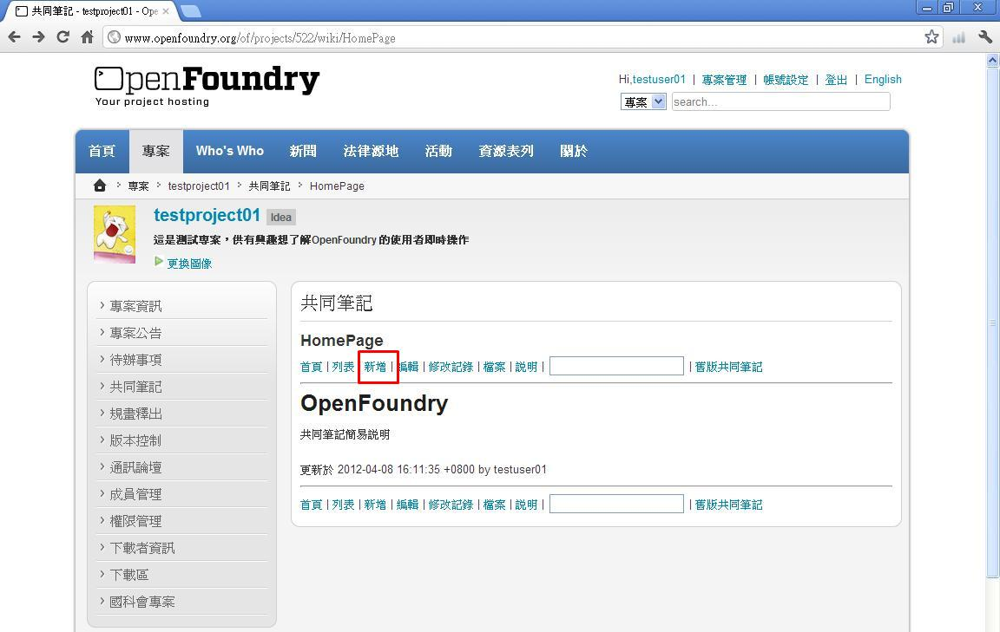
-
【新增】時各欄位與輸出結果的對照如下：
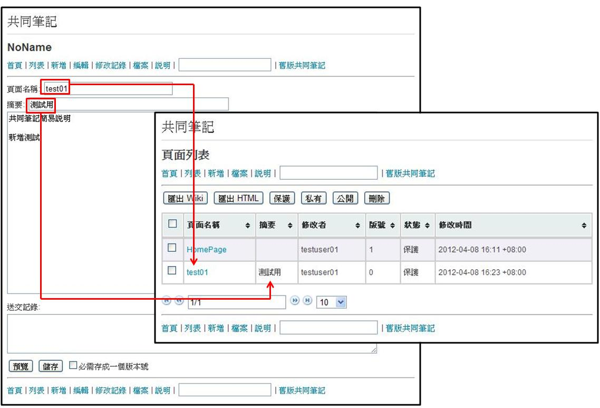
頁面名稱為顯示在【列表】中的標題，摘要可簡易說明此 wiki 的內容或輸入關鍵字。
-
【新增】完成後，可看到新增完成的頁面，也可點選【編輯】功能做修改。
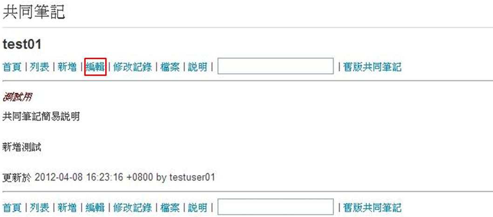
-
【編輯】時，可在送交紀錄欄簡易說明此次修改的內容，並勾選存成一個版本號，便可在該頁面的【修改記錄】中顯示此送交紀錄。
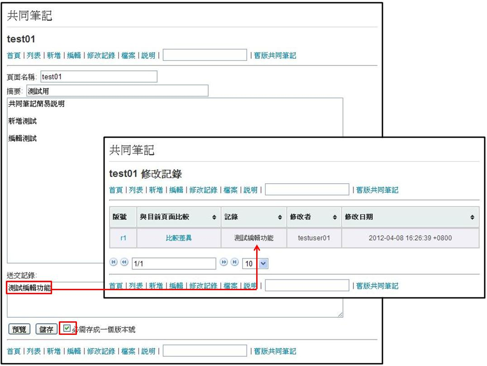
-
成功【新增】後的 wiki 權限預設為保護，一般使用者能夠觀看，但只有專案參與人能夠做編輯，若將權限設為公開，一般使用者便能共同編輯此頁面。
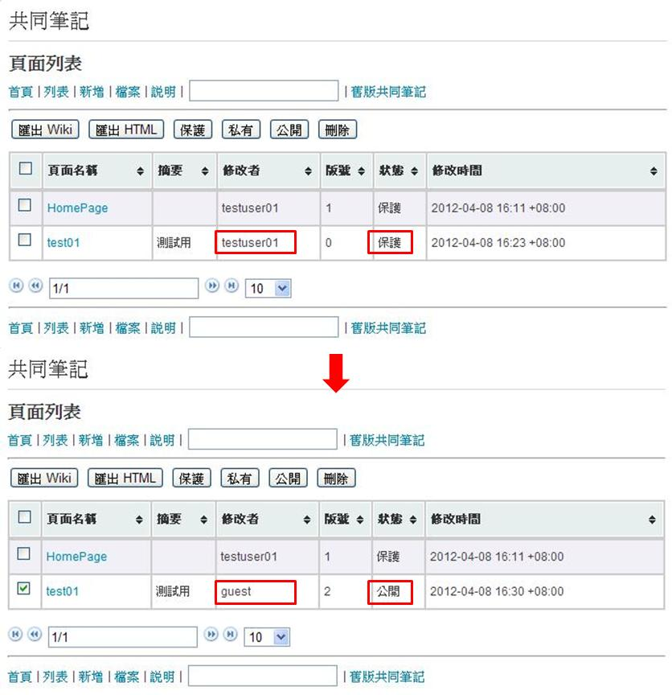
-
目前共同筆記提供圖檔上傳的功能，點選【選擇檔案】→【上傳】，上傳成功後便能在下方看到圖片資訊與預覽。
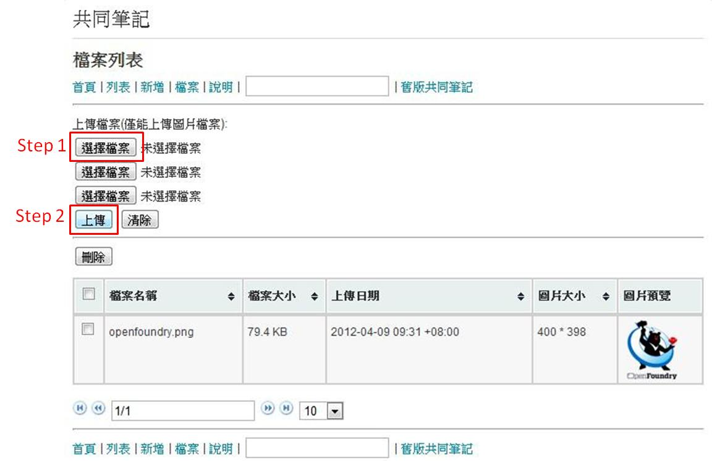
-
列表中，可看到有匯出 wiki 與 HTML 的選項，能將資料包含圖檔輸出為壓縮檔方便備份儲存。
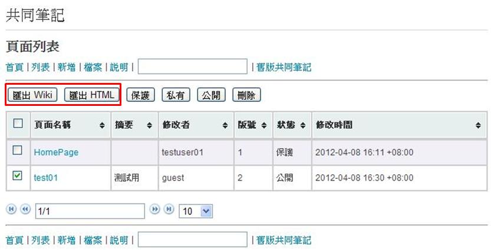
-
若在編輯的過程中，有 wiki 語法的問題，可點選頁面中的【說明】功能，內容簡單介紹了 wiki 的功能與常用的格式說明。
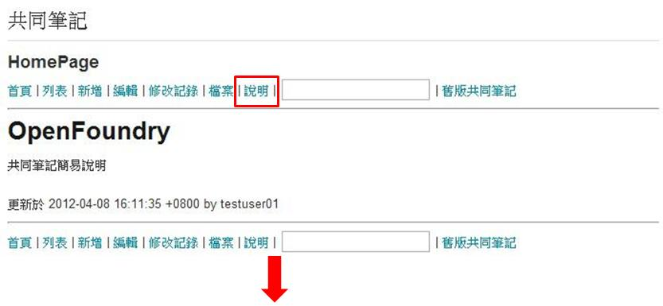
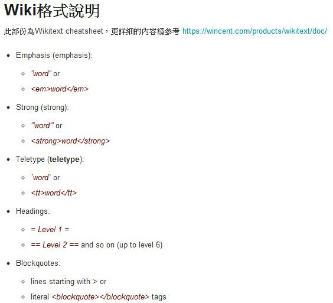